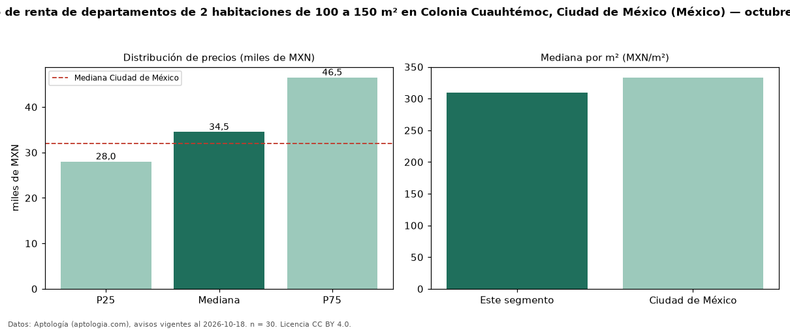

Precio de renta de departamentos de 2 habitaciones de 100 a 150 m² en Colonia Cuauhtémoc, Ciudad de México (México) — octubre 2026
MXN 34.500 al mes es el canon mediano de departamentos de 2 habitaciones de 100 a 150 m² en renta en Colonia Cuauhtémoc, Ciudad de México (México) (n = 30 avisos). Frente a la mediana de los departamentos de 2 habitaciones en renta de Colonia Cuauhtémoc (MXN 28.500, n = 107), queda 21 % por encima; este segmento reúne el 28 % de esos avisos. Por metro cuadrado, la mediana es MXN 309/m² al mes (n = 30), 6 % por debajo de los departamentos de 2 habitaciones en renta de Colonia Cuauhtémoc (MXN 329/m²). El área mediana anunciada es 114 m². La mediana de todos los departamentos en renta de Ciudad de México es MXN 32.000 (+8 % de diferencia). La mitad central de los avisos va de MXN 28.000 a MXN 46.500 (razón 1,7), una dispersión moderada. Datos: Aptología (aptologia.com), CC BY 4.0 — https://www.aptologia.com/. Archivos: PDF, CSV con las cifras y gráfica PNG.

| Avisos únicos | 30 |
|---|---|
| Percentil 25 | COP 28.000 |
| Mediana | COP 34.500 |
| Percentil 75 | COP 46.500 |
| Mediana por m² | COP 309 |
Fuente: avisos vigentes de portales inmobiliarios recopilados por Aptología, deduplicados (mínimo 30 avisos únicos por celda). Precios pedidos, no cerrados. Fecha: 2026-10-18.